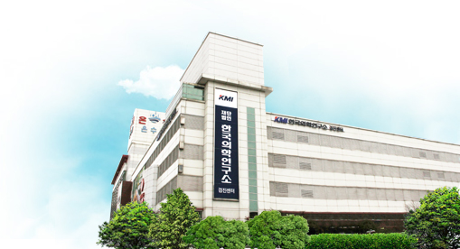
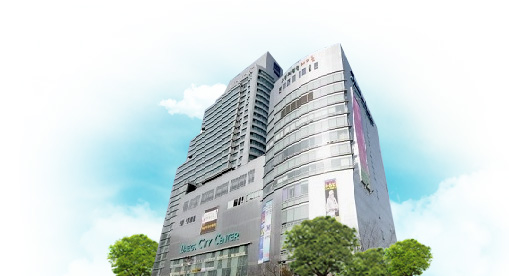
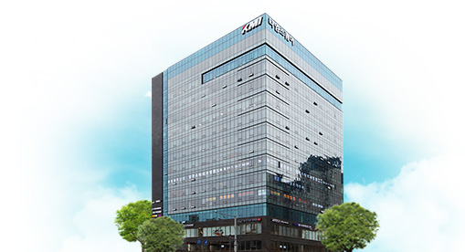

Since 1985
평생을 건강하게
종합건강검진기관 KMI 한국의학연구소가 함께합니다.
다양한 건강검진
더 친절하고 정확하게
KMI 모든 임직원은 국민건강증진을 위해 힘쓰고 있습니다.
자체 중앙분석센터
KMI는 정확한 검진결과를 신속하게 제공합니다.
건강관리파트너
연 검진인원
100만명 돌파
2020년 중증질환자(암) 1,937명 조기 발견
우리 이웃들 곁에
KMI는 다양한 사회공헌사업을 통해
도움의 손길이 필요한 곳에 가까이 있겠습니다.
SERVICE
국민 건강을 확실히 지키는
KMI의 서비스를 소개합니다.
검진센터 이용안내
1599-7070
월/화/목/금 - 07:00 ~ 16:00
수/토 - 07:00 ~ 12:30
채용검진
월/화/목/금 - 11:00 ~ 14:00
수/토 - 10:00 ~ 11:00
KMI Center
전국 7개의 KMI 한국의학연구소 센터에서
체계적인 검진을 받으실 수 있습니다.
본원(광화문) 검진센터
02-3702-9000
서울특별시 종로구 세종대로23길 54
(당주동, 세종빌딩 1 ~ 5층)
강남 검진센터
02-3496-3300
서울특별시 강남구 테헤란로 411
(삼성동, 성담빌딩 2 ~ 8층, 10층)
대구 검진센터
053-430-5000
대구광역시 중구 국채보상로 611
(문화동, 대구시티센터 5층)

광주 검진센터
062-602-2100
광주광역시 서구 상무중앙로 58
(치평동, 타임스타워 빌딩 8~10층)

여의도 검진센터
02-3688-114
서울특별시 영등포구 국제금융로2길 24 (여의도동, BNK금융타워 10, 13~15, 17~18층)
수원 검진센터
031-231-0114
경기도 수원시 권선구 동수원로 232
(권선동, 1층 수원검진센터)

부산 검진센터
051-810-1500
부산광역시 동구 조방로 14
(범일동, 동일타워 5층)
KMI Health Info.
건강을 위한 유익한 정보를 확인하실 수 있습니다.
[건강기상청 THE SIGNAL-②심근경색] 환자의 1/3은 병원 도착도 전에 사망한다는 무서운 질환!
[건강기상청 내몸 ON-⑩Q&A] 건강캐스터 남혜정과 함께하는 스페셜 Q&A!
[KMI 건강정보 '건강 ON' 위암] 정기적인 내시경 검사가 매우 중요한 '위암'
[KMI 건강검진] 서울삼성썬더스 농구단, KMI 수원센터에서 건강검진 받다!